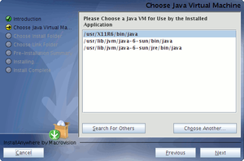

JAlbum
Dieser Artikel wurde für die folgenden Ubuntu-Versionen getestet:
Ubuntu 16.04 Xenial Xerus
Ubuntu 14.04 Trusty Tahr
Zum Verständnis dieses Artikels sind folgende Seiten hilfreich:
JAlbum  ist eine kommerzielle Anwendung zum Erstellen von Web-Fotoalben, die früher kostenlos nutzbar war. Die Fotoalben im HTML-Format können mittels Vorlagen ("Skins") sehr flexibel gestaltet werden. Einige Vorlagen werden bei der Installation bereits mitgeliefert, weitere stehen über die Homepage zur Verfügung. Folgende Funktionen stehen zur Verfügung:
ist eine kommerzielle Anwendung zum Erstellen von Web-Fotoalben, die früher kostenlos nutzbar war. Die Fotoalben im HTML-Format können mittels Vorlagen ("Skins") sehr flexibel gestaltet werden. Einige Vorlagen werden bei der Installation bereits mitgeliefert, weitere stehen über die Homepage zur Verfügung. Folgende Funktionen stehen zur Verfügung:
Bilder können entweder als komplette Ordner oder auch als Einzelbilder zum Album hinzugefügt werden
Unterstützung von "Drag&Drop"
Bilder werden automatisch verlustfrei gedreht, skaliert und können mit einem Wasserzeichen versehen werden
Hinzufügen von Bild-Kommentaren sowie Audio-Aufnahmen
Anzeige von Exif-Daten im Fotoalbum
Web-Diashows
Bestellformulare zur Bestellung von Ausdrucken von verschiedenen Dienstleistern
bequemes Hochladen ("Upload") mit integrierter FTP-Anwendung (inkl. intelligenter Aktualisierungsfunktion!)
 |
| Bildergalerie mit Turtle-Skin |
Da das Programm auf Java basiert, kann es plattformübergreifend eingesetzt werden. Derzeit stehen Übersetzungen der englischen Programmoberfläche in über 30 Sprachen zur Verfügung. Zum Hochladen eines fertigen Albums ins Internet wird sog. Webspace benötigt. Manche Internet-Provider stellen ihren Kunden diesen automatisch – wenn auch meist in der Größe eingeschränkt – zur Verfügung.
Wer partout keinen Hoster finden kann, der kann auch auf eine Adresse in der Form "mein_name.jalbum.net" ausweichen. Dazu ist allerdings eine – derzeit noch kostenlose – Registrierung notwendig. Leider sieht es so aus, dass dieses Angebot wie viele andere auch durch Werbeeinblendungen finanziert wird. Empfehlenswert ist auf jeden Fall ein gründliches Studium der AGB !
Ein Fotoalbum kann alternativ auch auf CD oder DVD gebrannt werden und so unter verschiedenen Betriebssystemen genutzt werden. Zum Betrachten des Fotoalbums ist kein Java notwendig, ein Webbrowser reicht zur Anzeige völlig aus. Weiterhin steht im Programm ein integrierter Webserver zur Verfügung, dessen Nutzung aber fundierte Netzwerk-Kenntnisse erfordert.
Auch die Programme F-Spot (GNOME) und digiKam (KDE) können Fotoalben im HTML-Format erstellen, besitzen allerdings kein integriertes FTP-Programm.
Hinweis:
Mit Version 12 wurde das bisherige Finanzierungsmodell (ab Version 10: Freeware mit integrierter Werbung) eingestellt. JAlbum steht nur noch als 30-Tage-Testversion zur Verfügung steht und ist damit ein rein kommerzielles Programm geworden.
Voraussetzungen¶
JAlbum benötigt Java. Wie man eine Laufzeitumgebung (JRE) installiert, ist im Artikel Java/Installation beschrieben. JAlbum 10.0 oder neuer funktionieren auch mit Java 7 (OpenJDK 7), während ältere Versionen Java 6 (OpenJDK 6) benötigen.
Hinweis:
Java kann zu Problemen mit aktiviertem Compiz führen. Ein Lösungsvorschlag findet sich unter Compiz/Problembehebung. Ansonsten müssen die Desktop-Effekte zur Installation und zum späteren Gebrauch abgeschaltet werden.
Installation¶
 Die Installation ist in drei Varianten möglich:
Die Installation ist in drei Varianten möglich:
Installation mittels Fremdpaket (.deb)
mit dem Installationsassistenten
nur für den aktuellen Benutzer
systemweit
manuelle Installation für den aktuellen Benutzer via .zip-Datei
Empfohlen wird die Installation mittels Fremdpaket, die nicht nur einfach und bequem ist, sondern auch eine problemlose Deinstallation ermöglicht. Eine vorab geforderte Registrierung ("Sign up") beim Download über die Homepage ist für die Nutzung des Programms nicht erforderlich und kann übersprungen werden ("Skip this step").
Hinweis:
Um Galerien ohne Werbung zu erzeugen, muss entweder eine Lizenz erworben werden oder man nutzt eine ältere Version  . Werbefrei sind alle Versionen < 10.
. Werbefrei sind alle Versionen < 10.
Fremdpaket¶
Seit Mai 2010 stehen erstmals fertige Pakete für Ubuntu zur Verfügung. Bei dieser Installationsvariante wird automatisch ein entsprechender Programmstarter angelegt. Die aktuelle JAlbum-Version kann als Jalbum for Linux (.deb for Ubuntu, Debian etc.) heruntergeladen und manuell installiert [1] werden.
Hinweis!
Fremdpakete können das System gefährden.
Gestartet wird JAlbum bei Ubuntu-Varianten mit einem Anwendungsmenü über den Eintrag "Grafik -> JAlbum".
Installationassistent¶
Die aktuelle JAlbum-Version kann als Jalbum for Linux (.bin for other distributions) heruntergeladen werden.
Hinweis!
Fremdsoftware kann das System gefährden.
In einem Terminal [2] die heruntergeladene Datei mittels
chmod u+x ./Jalbuminstall.bin
ausführbar [3] machen und danach mit
sh ./JAlbuminstall.bin

den Installationsassistenten starten. Dieser ist menügeführt und verlangt einige zusätzliche Angaben:
Pfad zur Java VM angeben, z.B. /usr/lib/jvm/java-6-openjdk/jre/bin
Ein Verzeichnis, in dem JAlbum und Skins installiert werden soll, z.B. ~/bin/jalbum
Einen Ordner, in dem Links zum Starten von JAlbum abgelegt werden soll, z.B. ~/bin
Hinweis:
Zur systemweiten Installation wird der Installationsassistent mit sudo sh ./Jalbuminstall.bin gestartet. Hierbei wird auch der Pfad zur Java VM automatisch gefunden. Als Speicherort empfiehlt sich dann /opt/jalbum/ (siehe opt).
Manuelle Installation¶
Alternativ ist auch ein ZIP-Archiv erhältlich, das nur entpackt werden braucht [4]. Für die Nutzung durch einen einzelnen Benutzer bietet sich z.B. ~/bin/jalbum als Speicherort an.
Anschließend kann ein Programm-Starter bzw. ein Menüeintrag [5] angelegt werden. Als Befehl sollte die Datei startjalbum.sh benutzt werden (die Option "Befehl in einem Terminalfenster ausführen" aktivieren!). Ein Symbol für den Menüeintrag kann frei gewählt werden – der am Anfang des Artikels abgebildete Frosch ist eine Möglichkeit.
JAlbum kann aber auch ohne Programm-Starter mit dem folgenden Befehl (der Pfad zur .jar-Datei ist je nach Speicherort anzupassen):
java -Xmx400M -jar ~/bin/jalbum/JAlbum.jar
in einem Terminal ausgeführt [6] werden.
Verwendung¶
Prinzipiell erfolgt die Erstellung eines Fotoalbums in 5 Schritten:
Bilder auswählen
Vorlage auswählen
Album erstellen
Vorschau (Layoutkontrolle im Browser)
Veröffentlichen (im Internet)
wobei statt Veröffentlichen – unter Zuhilfenahme externer Brennprogramme – stattdessen auch eine CD/DVD erstellt werden kann. Hierbei reicht es aus, den Inhalt des Unterordners Name des Fotoalbums/album zu brennen (der Speicherort lässt sich mit F4 in den Album-Einstellungen festlegen).
Der große Vorteil einer solchen CD/DVD im HTML-Format ist ihre Plattformunabhängigkeit – auf dem Zielsystem wird nur ein Browser benötigt. Ausnahme: es werden Vorlagen mit Adobe Flash verwendet - dann wird diese Multimedia-Komponente auf dem Zielsystem ebenfalls vorausgesetzt.
Vorlagen¶
Einige Vorlagen werden mit der Installation bereits mitgeliefert. Die Community hat jedoch eine Vielzahl von weiteren Skins erstellt. Die dort angebotenen Skins können einfach heruntergeladen und installiert werden. Unter Umständen muss aber darauf geachtet werden, unter welcher Lizenz ein Skin angeboten wird und ob der Skin zur installierten JAlbum-Version kompatibel ist.
Um einen Skin zu installieren, wird die heruntergeladene .zip-Datei in das entsprechende Skin-Verzeichnis des Programms entpackt [4], beispielsweise ~/bin/jalbum/skins.
Deinstallation¶
Falls man die Installation mittels Fremdpaket durchgeführt hatte, verwendet man zur Deinstallation die Paketverwaltung. Bei den anderen Installationsvarianten wird JAlbum durch einfaches Löschen des entsprechenden Installationverzeichnisses vom System entfernt. Anschließend den Starter im Anwendungsmenü entfernen.
Problembehebung¶
Arbeitsspeicher¶
Anspruchsvolle Java-Programme benötigen generell viel RAM – je mehr, desto besser. Im oben angegebenen Befehl werden mit der Option -Xmx400M für die JVM 400 MiB Arbeitsspeicher (RAM) reserviert (Java-Standard: 64 MiB). Bei weniger als 400 MiB leidet die Programmgeschwindkeit enorm (bis hin zur Unbenutzbarkeit).
Links¶
FAQ
- häufige Fragen und AntwortenRunning the jAlbum application from the command line
- Optionen für die Kommandozeile
JAlbum - digitale Fotoalben erstellen und veröffentlichen
 - Blogbeitrag 10/2007
- Blogbeitrag 10/2007Gallery - Bildergalerie auf dem eigenen Server
- Erstellt mit Inyoka
-
 2004 – 2017 ubuntuusers.de • Einige Rechte vorbehalten
2004 – 2017 ubuntuusers.de • Einige Rechte vorbehalten
Lizenz • Kontakt • Datenschutz • Impressum • Serverstatus -
Serverhousing gespendet von